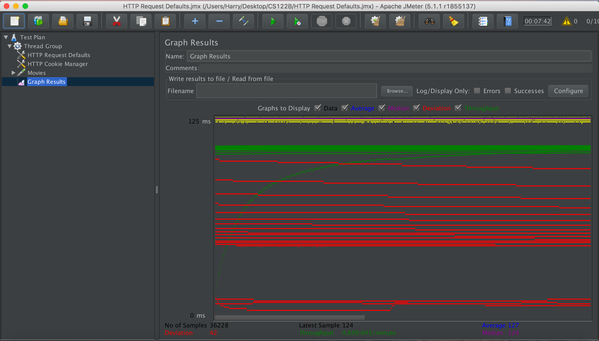

| Single-instance version cases |
Graph Results Screenshot |
Average Query Time(ms) |
Average Search Servlet Time(ms) |
Average JDBC Time(ms) |
Analysis |
| Case 1: HTTP/1 thread |
|
127 |
18.27 |
18.18 |
It take less time compare to 10 thread, less user less time to process |
| Case 2: HTTP/10 threads |
|
130 |
65.37 |
65.32 |
10 threads would take longer to process from 1threads |
| Case 3: HTTPS/10 threads |
|
131 |
65.31 |
65.21 |
HTTPS could take longer to process compare to HTTP, but for here it is not making a much difference |
| Case 4: HTTP/10 threads/No prepared statements |
|
131 |
37.29 |
37.23 |
prepared statement is not effecting much on the performace since we construct 1 statement, but not resuing the structure many times |
| Case 5: HTTP/10 threads/No connection pooling |
 |
127 |
75.25 |
71.41 |
No connection pooling is costing us much time on the process, the difference is clear |